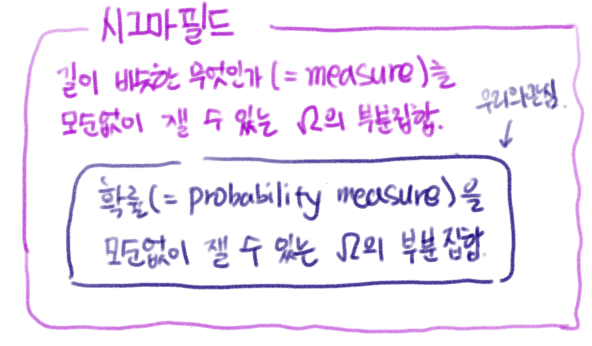

# {{< video https://youtu.be/playlist?list=PLQqh36zP38-wfoMvuj47y58x7m1wyN1RX&si=lo461vtiDMFtddHp >}}04wk: 시그마필드, 측도
1. 강의영상
2. 지금까지의 스토리
- 약속1: 구간 \([a,b]\)의 길이를 르벡메저로 잰다면 이를 \(\lambda([a,b])\) 와 같은 방식으로 정의한다.
- \(\lambda([0,0.2)) = 0.2\)
- \(\lambda(\{0\}) = 0\)
- \(\lambda\big(\cup_{n=2}^{\infty} \{\frac{1}{n}\}\big) = 0\)
- \(\lambda\big([0,1) - \cup_{n=2}^{\infty} \{\frac{1}{n}\}\big) = 1\)
- 약속2: 원래 시계예제에서 sample space 는 \(\Omega=[0,2\pi)\) 이지만 편의상 \(\Omega=[0, 1)\)로 가정하자. 즉 0은 12시, 0.5는 6시, 0.25는 3시를 의미한다. 이러한 정의를 하용하면
- 3시에서 6시사이에 바늘이 멈출 확률 \(= \lambda([0.25,0.50]) = 0.25\)
와 같이 “확률=길이” 가 되어 계산이 용이하다.
- 지금까지의 이야기.
- 우리가 원래 원했던 것은 \(\Omega=[0,1)\) 의 모든 부분집합에 대해서 확률을 “무모순”으로 정의 하는 것이었다.
- \(\Omega=[0,1)\) 의 모든 부분집합에 대해서 확률을 “무모순”으로 정의하는게 엄청 쉬운일 인줄 알았는데 사실은 그렇지가 않았다. 확률을 정의하는건 매우 까다로운 일이었다.
- 이러한 까다로움을 해결하기 위해서 “르벡메져”라는 새로운 도구를 사용했다. 이 도구는 몇 가지 까다로운 집합에 대해서도 확률을 무모순으로 정의할 수 있었다.
- 르벡메져는 구간 \([0,1)\)의 모든 유리수 집합의 길이와 구간 \([0,1)\)의 모든 무리수 집합의 길이를 다르게 정의하는 신기한 방식을 사용한다.
- 이는 유리수 집합의 원소수와 무리수 집합의 원소수는 같은 무한이지만 계급이 다르다는 사고방식을 기저에 깔고 있는데 이를 납득하기 위한 최소한의 노력으로 “셀 수 있는 무한”과 “셀 수 없는 무한”의 개념을 공부했다.
- 충격적인 사실
- 하지만 르벡메져를 통해서도 \(\Omega=[0,1)\)의 부분집합중 길이를 잴 수 없는 집합인 비탈리 집합이 존재함이 밝혀졌다. (https://ko.wikipedia.org/wiki/비탈리_집합)
- 즉 르벡메저를 써도 \(\Omega=[0,1)\)의 모든 부분집합의 확률을 모순없이 재는것은 불가능하다.
그런데, 굳이 비탈리 집합같은곳에서까지 확률을 재야하나??
- 오늘의 이야기
- 선택의 순간: (1) 르벡메져 이외의 측정법을 고려한다. (2) \(\Omega=[0,1)\)의 모든 부분집합에 대하여 무모순으로 확률을 정의하는 일을 포기한다.
- 우리는 (2)를 선택한다. 즉 \(\Omega=[0,1)\)의 모든 부분집합에 대해서 확률을 “무모순”으로 정의하는 일은 포기한다.1
- 대신 \(\Omega=[0,1)\)의 부분집합 중, 르벡메저로 길이를 잴 수 있는 집합들에 대해서만 확률을 “무모순”으로 정의하는 일을 시도하고자 한다. 즉 \(\Omega=[0,1)\)의 부분집합 중, 확률을 무모순으로 정의가능한 집합들만 모아서 거기에서만 확률을 정의한다는 의미이다. (쉽게 말하면, 비탈리 집합같이 골치아픈 집합은 굳이 확률을 재지 않겠다는 의미임)
1 참고로 (1), (2) 모두 가능한 선택이다. 그렇지만 왜 (1)을 선택하지 않았을까?? <– 떡밥
- 그런데 잴 수 있는 집합이 뭐지?
3. \(\sigma\)-field
- 목표: “\(\Omega\)의 부분집합 중 확률을 모순없이 잴 수 있는 집합의 모임” 이라는 개념을 수학적으로 정의해볼까?
느낌: 확률이 엄청 귀한 몸이 되었어요, 아무데서나 정의할 수 없겠단 말이죠?
- 기호에 대한 약속: \(\Omega\)의 부분집합 중 확률을 모순없이 정의할 수 있는 집합들의 모임을 일단 기호로 \({\cal F}\) 라 한다.
- “집합 \(A\)의 확률을 모순없이 정의할 수 있다 = 집합 \(A\)에 대한 확률값을 잴 수 있다” 와 같이 정의하자.
A. Motivation 1
# 생각1 – 잴 수 있는 집합의 모임
\(\Omega=\{H,T\}\) 라고 하자. 이제 아래와 같은 집합들을 생각하자.
\[\emptyset, \{H\}, \{T\}, \Omega\]
이 집합들은 모두 확률을 모순없이 정의할 수 있는 집합들인가?
(해설) – 상식에 호소하는 해설
우리는 이미 이전의 예제에서 \(\emptyset\), \(\{H\}\), \(\{T\}\), \(\Omega\) 의 확률을 모순없이 정의할 수 있다는 사실을 논의한 바 있다. 따라서 잴 수 있는 집합들의 묶음 \({\cal F}\)을 아래와 같이 정의한다면 묶음 \({\cal F}\)가 합리적일 것이다.
\[{\cal F}=\big\{\emptyset, \{H\}, \{T\}, \Omega\big\}\]
이때 \({\cal F}\)는 집합들의 집합인데, 이러한 집합을 collection 이라고 한다.
#
# 생각2 – 집합 \(A\)의 확률값을 잴 수 있다면, 집합 \(A^c\)의 확률값도 잴 수 있어~
\(\Omega=\{H,T\}\)라고 하자. \({\cal F}\)을 아래와 같이 정의한다면 묶음 \({\cal F}\)는 합리적이지 않다.
\[{\cal F}=\big\{\emptyset, \{H\}, \Omega\big\}\]
(해설1) – 상식에 호소하는 해설
이러한 묶음이 의미하는건 “앞면이 나올 확률은 모순없이 정의할 수 있지만, 뒷면이 나오는 확률은 모순없이 정의하는게 불가능해~” 라는 뜻이다. 그런데 뒷면이 나올 확률은 “1-앞면이 나올 확률” 로 모순없이 정의할 수 있으므로 “앞면 이 나올 확률이 모순없이 정의되면서” 동시에 “뒷면이 나올 확률이 모순없이 정의되지 않는” 상황은 없다.
(해설2) – 공리에 의한 해설
- \(\Omega\)는 잴 수 있는 집합이다. (왜냐하면 \(\Omega \in {\cal F}\) 라고 하였으므로) 따라서 \(\mathbb{P}(\Omega)\)의 값은 모순없이 정의됨을 알 수 있다. 그런데 확률의 공리2에 의하여 \(\mathbb{P}(\Omega)\)의 값은 1임을 알 수 있다.
- 한편 \(\{H\}\) 역시 잴 수 있는 집합이다. (왜냐하면 \(\{H\} \in {\cal F}\) 라고 하였으므로) 따라서 \(\mathbb{P}(\{H\})\)의 값은 모순없이 정의됨을 알 수 있다. 이 값을 편의상 \(p\) 라고 가정하자. 확률의 공리1에 의하여 \(0\leq p \leq 1\) 임을 알 수 있다.
- 아래의 수식을 관찰하자.
\[\Omega = \{H\} \uplus \{T\} \Rightarrow \mathbb{P}(\Omega) = \mathbb{P}(\{H\}) + \mathbb{P}(\{T\})\]
여기에서 \(\uplus\)는 서로소인 두 집합의 합집합 연산을 의미한다. 수식에서 왼쪽이 성립하는 이유는 확률과 상관없는 집합이론이고 \(\Rightarrow\) 가 성립하는 이유는 확률의공리3에 의해서 이다. 따라서
\[\mathbb{P}(\{T\})=\mathbb{P}(\Omega)-\mathbb{P}(\{H\})=1-p\]
로 “모순없이” 정의될 수 있어야 한다. 즉 \(\{T\}\)는 잴 수 있는 집합이어야 한다. 그런데 \(\{T\}\)는 \({\cal F}\)의 원소가 아니므로 묶음 \({\cal F}\)는 합리적이지 않다.
Note
[여집합에 닫힘]: 집합 \(A\)의 확률값을 잴 수 있다면, 집합 \(A^c\)의 확률값도 잴 수 있어야 한다. 즉 아래가 성립해야한다.
\[\forall A \subset \Omega:~ A \in {\cal F} \Rightarrow A^c \in {\cal F}\]
이를 좀 더 간단하게는 아래와 같이 쓸 수 있다.
\[A \in {\cal F} \Rightarrow A^c \in {\cal F}\]
왜냐하면 \({\cal F}\)의 원소라는 점은 이미 \(\Omega\)의 부분집합임을 암시하고 있으므로 \(A \subset \Omega\) 라는 조건은 생략가능하기 때문이다.
아이디어: \({\cal F}\) 라는 것은 확률값을 잴 수 있는 집합과 확률값을 잴 수 없는 집합을 동시에 정의하고 있음을 기억하자. 즉 \({\cal F}=\big\{\emptyset, \{H\}, \Omega\big\}\) 일때 \(\{H\}\)가 확률값을 잴 수 있는 집합이라는 사실에만 초점을 맞추지 말고 \(\{T\}\)가 확률값을 잴 수 없는 집합이라는 사실에도 초점을 맞추어야 한다.
#
# 생각3 – 전체집합에 대한 확률값을 잴 수 있다면, 공집합에 대한 확률도 잴 수 있어.
\(\Omega=\{H,T\}\)라고 하자. \({\cal F}\)를 아래와 같이 정의한다면 묶음 \({\cal F}\)는 합리적이지 않다.
\[{\cal F}=\big\{ \{H\}, \{T\}, \Omega\big\}\]
(해설)
전체집합의 확률은 \(P(\Omega)=1\)로 정의할 수 있다. 그런데 전체집합의 여집합인 공집합의 확률을 정의할 수 없는건 말이 안되므로 공집합은 \(\cal F\)에 포함되어야 한다.
#
# 생각4 – 동일한 \(\Omega\)에 대하여 확률값을 잴 수 있는 집합의 모임 \({\cal F}\)는 유니크하지 않음.
\(\Omega=\{1,2,3,4,5,6\}\)이라고 하자. \({\cal F}\)을 아래와 같이 정의한다고 하자. 이러한 묶음 \({\cal F}\)는 합리적이다.
\[{\cal F}=\big\{\emptyset, \{6\}, \{1,2,3,4,5\},\Omega \big\}\]
(해설)
어떠한 특수한 상황을 가정하자. 주사위를 던져야하는데 6이 나오면 살수 있고 6이 나오지 않으면 죽는다고 하자. 따라서 던지는 사람 입장에서는 주사위를 던져서 6이 나오는지 안나오는지만 관심있을 것이다. 이 사람의 머리속에서 순간적으로 떠오르는 확률들은 아래와 같다.2
2 공평한 주사위라고 하자..
- 살수있다 \(\to\) 1/6
- 죽는다 \(\to\) 5/6
- 살거나 죽는다 \(\to\) 1
- 살지도 죽지도 않는다 \(\to\) 0
이러한 확률은 합리적이다. 즉 아래의 집합들만 확률을 정의한다고 해도, 확률을 잘 정의할 수 있을 것 같다.
\[\emptyset, \{6\}, \{1,2,3,4,5\}, \Omega\]
#
# 생각5 – \(\Omega=[0,1)\)인 경우
\(\Omega=[0,1)\)이라고 하자. \({\cal F}\)을 아래와 같이 정의한다고 하자. 이러한 묶음 \({\cal F}\)는 합리적이다.
\[{\cal F}=\big\{\emptyset, [0,0.5), [0.5,1),\Omega \big\}\]
(해설)
아래와 같이 사건을 해석한다는 의미이다.
- 바늘이 12시에서 6시사이에 멈출확률
- 바늘이 6시에서 12시사이에 멈출확률
즉 \({\cal F}=\big\{\emptyset, [0,0.5), [0.5,1),\Omega \big\}\)의 원소에 대해서 아래와 같이 확률을 정의한다면 확률을 정의함에 모순이 없다.
- \(\mathbb{P}(\emptyset) = \lambda(\emptyset) = 0\)
- \(\mathbb{P}(\Omega) = \lambda(\Omega) = 1\)
- \(\mathbb{P}([0,0.5)) = \lambda([0,0.5]) = 0.5\)
- \(\mathbb{P}([0.5,1)) = \lambda([0.5,1]) = 0.5\)
사실 아래와 같이 정의해도 딱히 모순이 되진 않음. (단지 이 경우는 우리가 잰 것이 “길이”라고 주장할 수는 없겠지, 그래서 쓸모가 없겠지)
- \(\mathbb{P}(\emptyset) = 0\)
- \(\mathbb{P}(\Omega) = 1\)
- \(\mathbb{P}([0,0.5)) = 0\)
- \(\mathbb{P}([0.5,1)) = 1\)
(추가해설)
만약 “\([0,1]\) 사이의 모든 유리수의 집합에 대한 확률은 얼마인가?” 라고 묻는다면? 어떻게 대답해야하나?
모범대답: “몰라요, 관심없어요”
#
# 생각6 – \(\Omega\)를 어떠한 사건의 집합으로 보느냐에 따라서 \({\cal F}\)를 달리 구성할 수 있다.
\(\Omega=\{1,2,3,4,5,6\}\)이라고 하자. \({\cal F}\)을 아래와 같이 정의한다고 하자. 이러한 묶음 \({\cal F}\)는 합리적이다.
\[{\cal F}=\big\{\emptyset, \{1,3,5\}, \{2,4,6\},\Omega \big\}\]
(해설)
전체사건을 “주사위를 던져서 짝이 나오는 사건”, “주사위를 던져서 홀이 나오는 사건” 정도만 구분하겠다는 의미
#
# 생각7 – \(A\in {\cal F} \Rightarrow A^c \in {\cal F}\)
\(\Omega=\{1,2,3,4,5,6\}\)이라고 하자. \({\cal F}\)을 아래와 같이 정의한다고 하자. 이러한 묶음 \({\cal F}\)는 합리적이지 않다.
\[{\cal F}=\big\{\emptyset, \{1,3,5\}, \Omega \big\}\]
(해설)
“주사위를 던져서 홀수가 나올 사건”에 대한 확률을 정의할 수 있는데, 짝수가 나올 사건에 대한 확률을 정의할 수 없다는건 말이 안되는 소리임.
#
# 생각8 – \(\Omega=[0,1)\)인 경우
\(\Omega=[0,1)\)이라고 하자. \({\cal F}\)을 아래와 같이 정의한다고 하자. 이러한 묶음 \({\cal F}\)는 합리적이지 않다.
\[{\cal F}=\big\{\emptyset, [0,0.3),\Omega \big\}\]
(해설)
\(\mathbb{P}([0,0.3))\) 은 무모순으로 정의할 수 있는데, \(\mathbb{P}([0,0.3)^c)\) 는 무모순으로 정의불가능하다는 것은 말이 안되는 소리임.
#
# 생각9 – 서로소인 두 집합의 합
\(\Omega=\{1,2,3,4\}\)이라고 하자. 어떠한 필요에 따라서 1이 나올 확률과 2가 나올 확률에만 관심이 있고 나머지는 별로 관심이 없다고 하자. 그래서 \({\cal F}\) 를 아래와 같이 정의했다고 하자. 이러한 묶음 \({\cal F}\) 는 합리적이지 않다.
\[{\cal F}=\{\emptyset, \{1\}, \{2\}, \{2,3,4\}, \{1,3,4\}, \Omega \}\]
(해설1)
\({\cal F}\) 는 전체집합과 공집합을 포함하고 여집합에 닫혀있으므로 언뜻 생각해보면 합리적인듯 보이지만 그렇지 않다. 왜냐하면 \(\{1,2\}\)이 빠졌기 때문이다. 1이 나올 확률 \(\mathbb{P}(\{1\})\)와 2가 나올 확률 \(\mathbb{P}(\{2\})\)를 각각 정의할 수 있는데, 1 또는 2가 나올 확률 \(\mathbb{P}(\{1,2\})\)을 정의할 때 모순이 발생한다는 것은 합리적이지 못하다. 왜냐하면 \(\{1\} \cap \{2\} = \emptyset\) 이므로
\[\mathbb{P}(\{1\} \uplus \{2\})=\mathbb{P}(\{1\}) + \mathbb{P}(\{2\})\]
와 같이 정의가능하기 때문이다. 따라서 집합이 아래와 같이 수정되어야 한다.
\[{\cal F}=\{\emptyset, \{1\}, \{2\}, \{2,3,4\}, \{1,3,4\}, \Omega, \{1,2\}, \{3,4\} \}\]
(해설2)
아래를 관찰하자.
\[\{2\} \uplus \{3,4\} =\{2,3,4\} \Rightarrow \mathbb{P}(\{2\}) + \mathbb{P}(\{3,4\}) = \mathbb{P}(\{2,3,4\})\]
그런데 여기에서 \(\mathbb{P}(\{2\})\)와 \(\mathbb{P}(\{2,3,4\})\)는 정의가능한데, \(\mathbb{P}(\{3,4\})\)는 정의할 수 없다는 사실이 말이 안된다. 따라서 \({\cal F}\)를 아래와 같이 수정해야 한다.
\[{\cal F}=\{\emptyset, \{1\}, \{2\}, \{2,3,4\}, \{1,3,4\}, \Omega, \{3,4\}, \{1,2\} \}\]
해설2에 대한 논의를 일반화 하면 \(A\subset B \Rightarrow B = A \uplus (B-A) \Rightarrow \mathbb{P}(B) = \mathbb{P}(A) +\mathbb{P}(B-A)\) 이므로, \(A,B\) 가 확률값을 잴 수 있는 집합이라면 \(B-A\) 역시 확률값을 잴 수 있는 집합이어야 한다고 결론지을 수 있다.
Note
[\(\uplus\)에 닫힘]: 서로소인 두 집합 \(A,B\) 에서 확률값을 잴 수 있다면, 당연히 \(A \uplus B\) 에서도 확률값을 잴 수 있어야 한다. 즉 아래가 성리해야한다.
\[A \in {\cal F}, B \in {\cal F} \text{ and } A\cap B = \emptyset \quad \Longrightarrow \quad A \uplus B~ \in~ {\cal F}\]
Note
[포함관계에 있는 집합의 차집합에 닫힘]: 포함관계에 있는 두 집합 \(A\subset B\) 에서 모두 확률값을 잴 수 있다면, 당연히 \(B-A\) 에서도 확률값을 잴 수 있어야 한다. 즉 아래가 성리해야한다.
\[A \in {\cal F}, B \in {\cal F} \text{ and } A \subset B \quad \Longrightarrow \quad B-A ~ \in~ {\cal F}\]
#
# 생각10 – \({\cal A}=\{\{1\},\{2\}\}\) 일때, \(\sigma({\cal A})\) 를 구하는 문제
\(\Omega=\{1,2,3,4\}\)이라고 하자. 내가 관심이 있는 확률은 \(\mathbb{P}(\{1\})\), \(\mathbb{P}(\{2\})\) 밖에 없다고 하자. 이러한 확률들이 무모순으로 정의되기 위한 최소한의 \({\cal F}\) 를 정의하라.
(해설) – 좀 귀찮네..?
0차수정: \({\cal A} = \big\{\{1\}, \{2\}\big\}\)
1차수정: \(\big\{\emptyset, \{1\}, \{2\}, \Omega \big\}\)
2차수정: \(\big\{\emptyset, \{1\}, \{2\}, \{2,3,4\}, \{1,3,4\}, \Omega \big\}\)
3차수정: \(\big\{\emptyset, \{1\}, \{2\}, \{2,3,4\}, \{1,3,4\}, \Omega, \{1,2\}, \{3,4\} \big\}\)
사실 우리가 관심 있는건 \({\cal A} = \{ \{1\}, \{2\} \}\) 뿐 이었음. 그런데 뭔가 \(\mathbb{P}(\{1\})\)와 \(\mathbb{P}(\{2\})\)를 합리적으로 정의하기 위해서 필연적으로 발생하는 어떠한 집합들을 모두 생각하는건 매우 피곤하고 귀찮은 일임. 그래서 “아 모르겠고, \(\{1\}\) 와 \(\{2\}\) 를 포함하고 확률의 뜻에 모순되지 않게 만드는 최소한의 \({\cal F}\) 가 있을텐데, 거기서만 확률을 정의할래!” 라고 쉽게 생각하고 싶은 사람들이 생김. 그러한 공간을 \(\sigma({\cal A})\) 라는 기호로 약속하고 smallest \(\sigma\)-field containing \({\cal A}\) 라는 용어로 부름.
#
# 생각11
\(\Omega=[0,1)\) 이라고 하자. 집합 \(\mathbb{Q}\) 를 구간 \([0,1)\)에 포함된 모든 유리수의 집합이라고 하자. \({\cal A} = \{\{x\}: x\in \mathbb{Q}\}\) 이라고 하자. 아래가 성립할까?
\[\mathbb{Q} \in \sigma({\cal A})\]
즉 구간 \([0,1)\)에서의 유리수를 한점씩을 잴 수 있을 때3 구간 \([0,1)\)의 모든 유리수 집합 역시 잴 수 있어야 할까?
3 \(\mathbb{P}(\{0\})\), \(\mathbb{P}(\{0.21\})\), \(\dots\)를 각각 정의가능할 때
(해설)
- 집합 \(\{\frac{1}{2}\}\) 는 잴 수 있고, 집합 \(\{\frac{1}{3}\}\) 역시 잴 수 있다. (왜?) 그리고 \(\mathbb{P}(\{\frac{1}{2}\})=\mathbb{P}(\{\frac{1}{3}\})=0\) 이다. (왜?)
- 그렇다면 집합 \(\{\frac{1}{2},\frac{1}{3}\}=\{\frac{1}{2}\} \uplus \{\frac{1}{3}\}\) 역시 잴 수 있어야 하며, \(\mathbb{P}(\{\frac{1}{2}\} \uplus \{\frac{1}{3}\})=0\) 이다. 왜냐하면 확률의 공리에 의하여 아래식이 성립하기 때문이다.
\[\mathbb{P}(A_1 \uplus A_2)= \mathbb{P}(A_1) + \mathbb{P}(A_2)\]
- 비슷한 논리로 집합 \(\{\frac{1}{2},\frac{1}{3},\dots,\frac{1}{100}\}\) 역시 잴 수 있어야 하며, \(\mathbb{P}(\{\frac{1}{2},\frac{1}{3},\dots,\frac{1}{100}\})=0\) 이다. 왜냐하면 확률의 공리에 의하여 아래식이 성립하기 때문이다.
\[\mathbb{P}(\uplus_{n=1}^{100} A_n) = \sum_{n=1}^{100}\mathbb{P}(A_n)\]
- 비슷한 논리로 집합 \(\{\frac{1}{2},\frac{1}{3},\dots \}\) 역시 잴 수 있어야 하며 \(\mathbb{P}(\{\frac{1}{2},\frac{1}{3},\dots \})=0\) 이다. 왜냐하면 확률의 공리에 의하여 아래식이 성립하기 때문이다.
\[\mathbb{P}(\uplus_{n=1}^{\infty} A_n) = \sum_{n=1}^{\infty}\mathbb{P}(A_n)\]
- 집합 \(\mathbb{Q}\) 는 잴 수 있을까? \(\mathbb{Q}\) 의 카니널리티는 자연수의 카디널리티와 같으므로4 \(\mathbb{N} \to \mathbb{Q}\) 인 전단사함수 \(f\)가 존재하며, 따라서 아래와 같이 쓸 수 있다.
4 왜??
\[\mathbb{Q} = \{f(1),f(2),\dots, \} = \uplus_{n=1}^{\infty}\{ f(n) \}\]
확률의 공리에 의하여 아래식이 성립한다.
\[\mathbb{P}(\mathbb{Q}) = \sum_{n=1}^{\infty} \mathbb{P}(\{f(n)\})\]
우변의 값이 무모순으로 정의되므로 \(\mathbb{P}(\mathbb{Q})\) 역시 무모순으로 정의되어야 하며 그 값은 0이다.
Note
[\(\uplus_{n=1}^{\infty}\)에 닫힘]: 서로소인 집합들 \(A_1,A_2,\dots\) 에서 확률값을 잴 수 있다면, \(A=\uplus_{n=1}^{\infty} A_n\) 에서도 확률값을 잴 수 있어야 한다. 즉 아래가 성리해야한다.
\[\big(A_1 \in {\cal F}, A_2 \in {\cal F} ,\dots\big) \text{ and } \big(\forall {m,k} \in \mathbb{N}, m\neq k:~ A_m \cap A_k = \emptyset \big) \quad \Longrightarrow \quad \uplus_{n=1}^{\infty} A_n \in~ {\cal F}\]
#
# 생각12
\(\Omega=[0,1)\) 이라고 하자. 집합 \(\mathbb{Q}\) 를 구간 \([0,1)\)에 포함된 모든 유리수의 집합이라고 하자. \({\cal A} = \{\{x\}: x\in \mathbb{Q}\}\) 이라고 하자. 아래가 성립할까?
\[\mathbb{Q}^c \in \sigma({\cal A})\]
단, 여기에서 \(\mathbb{Q}^c\) 는 구간 \([0,1)\)에 포함된 모든 무리수의 집합이다.
(해설)
\(\mathbb{Q} \in \sigma({\cal A})\) 이므로 \(\mathbb{Q}^c\in \sigma({\cal A})\) 이어야 한다. \(\mathbb{P}(\mathbb{Q})=0\) 이므로, \(\mathbb{P}(\Omega - \mathbb{Q})=1\) 이다.
\(\mathbb{Q}^{c}=\uplus_{x \in \mathbb{Q}^c} \{x\}\) 의 꼴로 표현될 수 있지만, \(\mathbb{Q}^{c}=\uplus_{x \in \mathbb{Q}^c} \{x\}=\uplus_{n=1}^{\infty}\{x_n\}\) 와 같이 표현할 수 없으므로 \(\mathbb{P}(\mathbb{Q}^{c})=\sum_{x \in \mathbb{Q}^c}\mathbb{P}(\{x\})\) 와 같이 쓸 수 없음을 주의하라.
#
# 생각13
\(\Omega=\{1,2,3,4,5,6\}\) 이라고 하자. \({\cal F}=\emptyset\) 와 같이 정의한다면 합리적인가?
(해설)
이건 너무 짜증나는데?.. 그냥 \({\cal F}\neq \emptyset\) 이라고 약속하자.
#
# 생각1~13의 결론
지금까지의 조건을 종합하면, \(\Omega\)의 부분집합 중 잴 수 있는 집합들의 모임 \({\cal F}\)은 아래의 조건을 충족해야할 것 같다.
조건1. \({\cal F}\neq \emptyset\)
조건2. \(A \in {\cal F} \Rightarrow A^c \in {\cal F}\)
조건3. \(A \in {\cal F}, B \in {\cal F} \text{ and } A\cap B = \emptyset \quad \Longrightarrow \quad A \uplus B~ \in~ {\cal F}\)
조건4. \(A \in {\cal F}, B \in {\cal F} \text{ and } A \subset B \quad \Longrightarrow \quad B-A ~ \in~ {\cal F}\)
조건5. \(\big(A_1 \in {\cal F}, A_2 \in {\cal F} ,\dots\big) \text{ and } \big(\forall {m,k} \in \mathbb{N}, m\neq k:~ A_m \cap A_k = \emptyset \big) \quad \Longrightarrow \quad \uplus_{n=1}^{\infty} A_n \in~ {\cal F}\)
#
# 조건의 정리
위의 5개의 조건은 아래의 3가지 조건으로 정리가능하다.
조건1. \({\cal F}\neq \emptyset\)
조건2. \(A \in {\cal F} \Rightarrow A^c \in {\cal F}\)
조건3. \(\big(\forall n \in \mathbb{N}: A_n \in {\cal F} \big) \text{ and } \big(\forall {m,k} \in \mathbb{N}, m\neq k:~ A_m \cap A_k = \emptyset \big) \quad \Longrightarrow \quad \uplus_{n=1}^{\infty} A_n \in~ {\cal F}\)
또는 아래의 3가지 조건으로 정리가능하다.
조건1. \(\Omega \in {\cal F}\)
조건2. \(A \in {\cal F} \Rightarrow A^c \in {\cal F}\)
조건3. \(\big(\forall n \in \mathbb{N}: A_n \in {\cal F} \big) \text{ and } \big(\forall {m,k} \in \mathbb{N}, m\neq k:~ A_m \cap A_k = \emptyset \big) \quad \Longrightarrow \quad \uplus_{n=1}^{\infty} A_n \in~ {\cal F}\)
#
# 람다시스템
\(\Omega\)의 부분집합중 잴 수 있는 집합의 모임 \({\cal F}\) 는 아래의 조건1~ 조건3을 만족하는 집합의 집합 (collection) 이라고 정의하면 어떨까??
조건1. \(\Omega \in {\cal F}\)
조건2. \(A \in {\cal F} \Rightarrow A^c \in {\cal F}\)
조건3. \(\big(\forall n \in \mathbb{N}: A_n \in {\cal F} \big) \text{ and } \big(\forall {m,k} \in \mathbb{N}, m\neq k:~ A_m \cap A_k = \emptyset \big) \quad \Longrightarrow \quad \uplus_{n=1}^{\infty} A_n \in~ {\cal F}\)
그럴싸하지만, 하나의 조건이 더 필요하다.
#
B. Motivation 2
# 생각1 – trivial \(\sigma\)-field
\(\Omega=[0,1)\) 이라고 하자. \({\cal F}\)을 아래와 같이 정의한다고 하자. 이러한 묶음 \({\cal F}\)는 합리적이다.
\[{\cal F}=\{\emptyset, \Omega \}\]
(해설)
이렇게 잡으면 모순이 일어나진 않음. (그렇지만 이러한 \({\cal F}\)는 “확률”을 쓸모없는 개념으로 만든다)
#
# 생각2 – 교집합..?
\(\Omega=\{1,2,3,4\}\)라고 하자. 아래와 같은 \({\cal F}\)는 합리적일까?
\[{\cal F}= \big\{ \emptyset, \{1,2\}, \{1,3\}, \{1,4\},\{2,3\},\{2,4\},\{3,4\}, \Omega\big\}\]
(해설)
집합 \(A\)와 \(B\)에 대한 확률값을 매길 수 있다면 \(\mathbb{P}(A \cap B)\)를 정의할 수 있어야 할까? 이 문항은 이 질문에 대한 답을 준다. 주어진 \({\cal F}\)는 아래의 조건을 만족한다.
조건1. \(\Omega \in {\cal F}\)
조건2. \(A \in {\cal F} \Rightarrow A^c \in {\cal F}\)
조건3. \(\big(\forall n \in \mathbb{N}: A_n \in {\cal F} \big) \text{ and } \big(\forall {m,k} \in \mathbb{N}, m\neq k:~ A_m \cap A_k = \emptyset \big) \quad \Longrightarrow \quad \uplus_{n=1}^{\infty} A_n \in~ {\cal F}\)
그렇지만 \({\cal F}\)는
\[\{1,2\} \cap \{1,3\} = \{1\}\]
와 같은 집합이라든가,
\[\{1,2\} \cup \{1,3\} = \{1,3,4\}\]
와 같은 집합의 확률값을 잴 수 없다고 한다. 즉 \(\mathbb{P}(A)\), \(\mathbb{P}(B)\)를 잴 수 있음에도 \(\mathbb{P}(A \cap B)\), \(\mathbb{P}(A \cup B)\) 의 확률값은 모두 잴 수 없다고 하는 것이다. 이러한 접근법은 확률의 공리에 모순을 불러일으키는 건 아니지만 “확률”을 쓸모없게 만든다.
#
# 생각3 – 교집합..?
\(\Omega=\{1,2,3,4\}\)라고 하자. 아래와 같은 \({\cal F}\)는 합리적일까?
\[{\cal F}= \big\{ \emptyset, \{1,2\}, \{1,3\}, \{1,4\},\{2,3\},\{2,4\},\{3,4\}, \Omega\big\}\]
(해설)
집합 \(A\)와 \(B\)에 대한 확률값을 매길 수 있다면 \(\mathbb{P}(A \cap B)\)를 정의할 수 있어야 할까? 이 문항은 이 질문에 대한 답을 준다. 주어진 \({\cal F}\)는 아래의 조건을 만족한다.
조건1. \(\Omega \in {\cal F}\)
조건2. \(A \in {\cal F} \Rightarrow A^c \in {\cal F}\)
조건3. \(\big(\forall n \in \mathbb{N}: A_n \in {\cal F} \big) \text{ and } \big(\forall {m,k} \in \mathbb{N}, m\neq k:~ A_m \cap A_k = \emptyset \big) \quad \Longrightarrow \quad \uplus_{n=1}^{\infty} A_n \in~ {\cal F}\)
그렇지만 \({\cal F}\)는
\[\{1,2\} \cap \{1,3\} = \{1\}\]
와 같은 집합이라든가,
\[\{1,2\} \cup \{1,3\} = \{1,3,4\}\]
와 같은 집합의 확률값을 잴 수 없다고 한다. 즉 \(\mathbb{P}(A)\), \(\mathbb{P}(B)\)를 잴 수 있음에도 \(\mathbb{P}(A \cap B)\), \(\mathbb{P}(A \cup B)\) 의 확률값은 모두 잴 수 없다고 하는 것이다. 이러한 접근법은 확률의 공리에 모순을 불러일으키는 건 아니지만 “확률”을 쓸모없게 만든다.
#
# 조건의정리 (교집합을 추가하면)
확률을 좀 더 쓸모있게 만들기 위해 두 집합 \(A\), \(B\)에 대한 확률을 무모순으로 정의가능하다면 그것의 교집합인 \(A\cap B\)에 대하여서도 확률값을 무모순으로 정의가능하다고 가정하자. 즉 \(\Omega\)의 부분집합중 잴 수 있는 집합의 모임 \({\cal F}\) 는 아래의 조건1~ 조건4을 만족하는 집합의 집합 (collection) 이라고 정의하자.
조건1. \(\Omega \in {\cal F}\)
조건2. \(A \in {\cal F} \Rightarrow A^c \in {\cal F}\)
조건3. \(\big(\forall n \in \mathbb{N}: A_n \in {\cal F} \big) \text{ and } \big(\forall {m,k} \in \mathbb{N}, m\neq k:~ A_m \cap A_k = \emptyset \big) \quad \Longrightarrow \quad \uplus_{n=1}^{\infty} A_n \in~ {\cal F}\)
조건4. \(A \in {\cal F}, B \in {\cal F} \Rightarrow A \cap B \in {\cal F}\)
그런데 조건3과 조건4를 이용하면 아래와 같은 조건5를 유추할 수 있다.
조건1. \(\Omega \in {\cal F}\)
조건2. \(A \in {\cal F} \Rightarrow A^c \in {\cal F}\)
조건3. \(\big(\forall n \in \mathbb{N}: A_n \in {\cal F} \big) \text{ and } \big(\forall {m,k} \in \mathbb{N}, m\neq k:~ A_m \cap A_k = \emptyset \big) \quad \Longrightarrow \quad \uplus_{n=1}^{\infty} A_n \in~ {\cal F}\)
조건4. \(A \in {\cal F}, B \in {\cal F} \Rightarrow A \cap B \in {\cal F}\)
조건5. \(\big(\forall n \in \mathbb{N}: A_n \in {\cal F} \big) \quad \Longrightarrow \quad \cup_{n=1}^{\infty} A_n \in~ {\cal F}\)
그런데 조건5는 조건3을 imply 하므로 조건3을 삭제할 수 있다.
조건1. \(\Omega \in {\cal F}\)
조건2. \(A \in {\cal F} \Rightarrow A^c \in {\cal F}\)
조건4. \(A \in {\cal F}, B \in {\cal F} \Rightarrow A \cap B \in {\cal F}\)
조건5. \(\big(\forall n \in \mathbb{N}: A_n \in {\cal F} \big) \quad \Longrightarrow \quad \cup_{n=1}^{\infty} A_n \in~ {\cal F}\)
그런데 조건5와 조건2가 조건4를 imply 하므로 조건4 역시 삭제할 수 있다. 따라서 정리하면 아래와 같다.
조건1. \(\Omega \in {\cal F}\)
조건2. \(A \in {\cal F} \Rightarrow A^c \in {\cal F}\)
조건3. \(\big(\forall n \in \mathbb{N}: A_n \in {\cal F}\big) \Rightarrow \cup_{n=1}^{\infty} A_n \in~ {\cal F}\)
#
C. 정의
# 정의: 시그마필드
\(\Omega\)의 부분집합중 아래의 조건1~ 조건3을 만족하는 집합의 집합 (collection) \({\cal F}\)를 “\(\Omega\)에 대한 시그마필드”라고 한다.
조건1. \(\Omega \in {\cal F}\)
조건2. \(A \in {\cal F} \Rightarrow A^c \in {\cal F}\)
조건3. \(\big(\forall n \in \mathbb{N}: A_n \in {\cal F}\big) \Rightarrow \cup_{n=1}^{\infty} A_n \in~ {\cal F}\)
그리고 \({\cal F}\)의 원소를 \({\cal F}\)-measurable set 이라고 한다.
#
- 좀 더 편리하게 아래와 같이 기억하면 좋다.
시그마필드는 잴 수 있는 집합의 모임인데 아래와 같은 규칙을 만족해야 한다. (1) 전체집합을 포함한다. (2) 여집합에 닫혀있다. (3) 가산합집합에 닫혀있다.
- 참고1: 시그마필드라는 것은 유일하게 정의되지 않는다. 즉 동일한 \(\Omega\)에 대하여 정의할 수 있는 시그마필드 \({\cal F}\)는 유일하지 않다.
- 참고2: 시그마필드는 \(\Omega\) 없이 단독으로 정의되지 않는다. 즉
\[{\cal F}=\{\emptyset, \{H\}, \{T\}, \{H,T\}\}\]
는 단지 그냥 시그마필드라고 언급하기 보다 \(\Omega=\{H,T\}\)에 대한 시그마필드라고 해야 정확한 표현이다.
- 참고3: 참고2에 따라서 \({\cal F}\) 단독으로 표기하는 것 보다 \(\Omega\)를 붙여서 \((\Omega,{\cal F})\)와 같이 쌍으로 표기하는게 더 합리적이다. 앞으로는 이러한 쌍을 measurable space 라고 부른다.
- 참고4: 시그마필드는 엄밀하게 말하면 “확률값”을 무모순으로 정의가능한 집합들의 모임이 아니다. 정확하게는 “길이 비슷한 무언가”를 무모순으로 정의가능한 집합들의 모임이다. 시그마필드의 정의를 잘 생각해보면, “확률값” 대신에 “길이” 혹은 “길이 비슷한 무언가” 를 대입하여도 말이 성립한다.
- 참고5: “길이 비슷한 무언가” 에는 “길이”도 포함되고 “확률”도 포함된다. 따라서 시그마필드를 올바르게 이해하는 것은 아래의 그림이다.

즉 시그마필드는 “확률값”을 무모순으로 정의하기 위해 필요한 최소기준들을 만족하는 모임일 뿐이지, 그 조건들을 만족한다고 반드시 “확률값”을 무모순으로 정의할 수 있는건 아니다. (신랑감후보같은 개념)